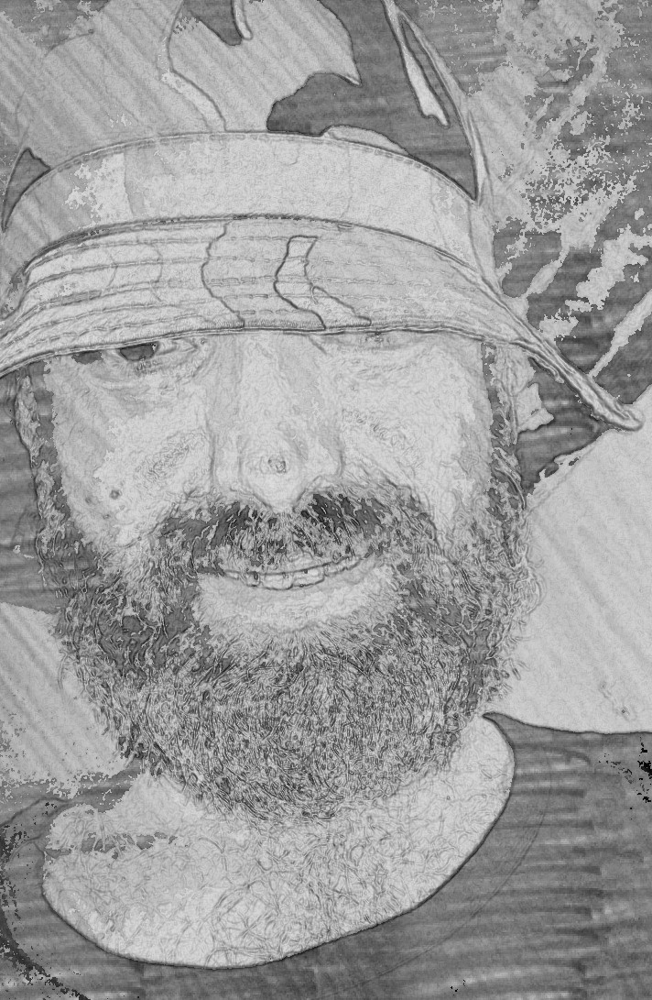

استوحيت هذا البرنامج من صفحة ويب تتبع لمرصد HEAD IKI الروسي حيث كنت ابحث عن كود بسيط لحساب التحويلات بين الإحداثيات السماوية و يعمل على متصفح الانترنت بحيث يمكن الاستفادة منه عبر أجهزة الهاتف المحمول بمختلف أنواعها, و قد ألهمني العمل على برنامج " علم الفلك الموضعي " و هو في شكل صفحات ويب تعليمية في الفلك الرصدي الموضعي نسخة أندرويد, إلى إنشاء هذه الصفحة او لِنَقُل البرنامج الذي يعتبر مكملاً لفهم البرنامج المذكور, حيث يتم هنا التحويل بين ثلاثة أنواع للإحداثيات السماوية . يمكنك التحويل بين الإحداثيات الاستوائية و البروجية و المجرّية مع الأخذ بعين الاعتبار تاريخ الحقبة التي يتم الحساب ضمنها. كما نستطيع رؤية و حساب التغيرات في النوع الواحد من الإحداثيات بين أزمنة متفاوتة, و يعود ذلك إلى التغيرات التي تطرأ على ميل محور الأرض و ما يعرف بمبادرة الاعتدالين و الترنح الذي يسببه وجود القمر و حركته حول الأرض.
يمكنك استخدام البرنامج و محتوياته و مشاركتها عبر أجهزة متعددة دون الرجوع إلى المؤلف شرط استخدامه لأعمال غير ربحية و لمهام تعليمية و لا يحق بيعه لأي ظرف و أي كان

اسمي قتيبة أقرع و من مواليد مدينة دمشق و اقطن في مدينة حلب . حائز على شهادة بكالوريوس في الفيزياء و الكيمياء و على دبلوم فيزياء الكترونيات الجسم الصلب. هذا البرنامج هو
استكمال لأعمال سابقة متعددة لتبسيط و نشر علم الفلك على الصعيد العربي تحديداً.
شكراً لاستخدامكم هذا البرنامج و ارجو ان ينال إعجابكم
قتيبة أقرع
25 آذار-مارس 2018